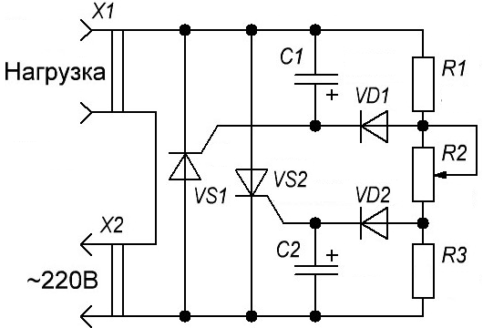
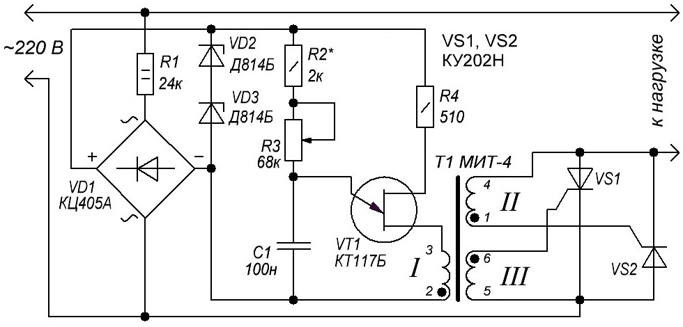

Регуляторы мощности
на двух тринисторах
Регулятор мощности на двух тринисторах (вариант №1)
На рисунке 1 показана схема регулятора без диодного моста, на двух тринисторах. Тринисторы включены встречно-параллельно, поэтому каждый из них пропускает ток только во время «своего» полупериода сетевого напряжения на аноде. Так, когда на верхнем по схеме выводе разъема X1 положительный полупериод, через резисторы R1, R2, диод VD2 заряжается конденсатор С2 и открывается тринистор VS2. А при появлении на этом штырьке отрицательного полупериода напряжения тринистор VS2 закрывается, но через резисторы R3, R2 и диод VD1 заряжается конденсатор С1 и открывается тринистор VS1. Ток через нагрузку будет идти в оба полупериода напряжения, но среднее значение его определяется сдвигом фазы открывания тринисторов относительно соответствующих полупериодов сетевого напряжения.

Таблица 1
| Обозначение | Наименование | Номинал | Количество | Примечание |
|---|---|---|---|---|
| C1,C2 | Конденсатор электролитический | 10 мкФ × 10В | 2 | |
| R1, R3 | Резистор постоянный | 5,1 кОм/1 Вт | 2 | |
| R2 | Резистор переменный | 68 кОм | 1 | |
| VD1, VD2 | Диод | Д226Б | 2 | Д226В-Д226Д, Д7Б—Д7Ж |
| VS1,VS2 | Тринистор | КУ201Л | 2 |
Плавное изменение сдвига фазы (а значит, и среднего тока через нагрузку) осуществляется переменным резистором R2, общим для обеих зарядных цепочек. Этот регулятор способен управлять нагрузкой с максимальной мощностью 200 Вт, и напряжение на ней можно плавно изменять от 25 до 210 В.
Для управления более мощной нагрузкой, нужно заменить тринисторы на КУ202К-КУ202Н.
Такой регулятор обычно начинает работать сразу, но иногда может наблюдаться скачкообразное изменение напряжения на нагрузке при перемещении движка переменного резистора. Объясняется это неодинаковым напряжением открывания тринисторов. Подобрать тринисторы с одинаковыми параметрами не всегда возможно, проще изменить сдвиг фазы на управляющем электроде одного из тринисторов.
Для изменения сдвига фазы на управляющем электроде тринистора:.
- Включить регулятор в сеть, подключив к нему настольную лампу.
- Плавно перемещая движок переменного резистора, найти положение, при котором яркость лампы изменяется скачком.
- Отвести движок переменного резистора немного назад, до положения, когда яркость лампы скачком уменьшится.
- Поочередно замкнуть управляющий электрод каждого тринистора с его катодом. Тот тринистор, при замыкании электродов которого лампа гаснет, имеет меньшее напряжение включения. Значит, на втором тринисторе следует уменьшить сдвиг фазы.
Если это, к примеру, тринистор VS1, то уменьшают сопротивление резистора R3, а для тринистора VS2 — сопротивление резистора R1.
Можно увеличить сдвиг фазы для тринистора с меньшим напряжением включения. Для этого увеличивают сопротивление соответствующего резистора. В этом случае возрастет минимальное напряжение, которое можно установить регулятором на нагрузке.
Регулятор мощности на двух тринисторах (вариант №2)
Схема регулятора мощности представленная на рис. 2 позволяет регулировать мощность в нагрузке, рассчитанной на включение в сеть напряжением 220 В, от 5...10 до 97...99% номинальной мощности. Коэффициент полезного действия регулятора не менее 98%. Регулятор мощности можно использовать совместно с маломощными электропечами, лампами накаливания и другими активными нагрузками.

Таблица 2
| Обозначение | Наименование | Номинал | Количество | Примечание |
|---|---|---|---|---|
| C1 | Конденсатор электролитический | 0,1 мкФ | 1 | |
| R1, | Резистор постоянный | 24 кОм/2 Вт | 1 | |
| R2 | Резистор постоянный | 2 кОм/0,5 Вт | 1 | |
| R3 | Резистор переменный | 68 кОм | 1 | |
| R4 | Резистор постоянный | 510 Ом/0,5 Вт | 1 | |
| Т1 | Трансформатор | МИТ-4 | 1 | МИТ-10 |
| VD1 | Диодный мост | КЦ405А | 1 | КЦ402 |
| VD2, VD3 | Стабилитрон | Д814Б | 2 | |
| VT1 | Транзистор однопереходный | КТ117Б | 1 | КТ117А |
| VS1,VS2 | Тринистор | КУ201Н | 2 |
Тринисторы VS1 и VS2 включены последовательно с нагрузкой. Изменение мощности, потребляемой нагрузкой, достигается изменением угла открывания тринисторов.
Узел, обеспечивающий изменение угла открывания тринисторов, выполнен на однопереходном транзисторе VT1. Конденсатор С1, соединенный с эмиттером транзистора, заряжается через резисторы R2 и R3. Как только напряжение на обкладках конденсатора достигнет определенного значения, однопереходный транзистор откроется, через обмотку I трансформатора Т1 пройдет короткий импульс тока. Импульсы с обмотки II или III трансформатора откроют тринистор VS1 или VS2 - в зависимости от фазы сетевого напряжения, и с этого момента до конца полупериода через нагрузку будет протекать ток. Изменяя сопротивление резистора R3, можно регулировать скорость зарядки конденсатора С1 и, следовательно, угол открывания тринисторов и среднюю мощность в нагрузке.
Узел регулирования угла открывания тринисторов питается от двухполупериодного выпрямителя, выполненного по мостовой схеме (VD1). Напряжение на однопереходном транзисторе ограничено стабилитронами VD2, VD3.
Диодный мост можно собрать на диодах Д226, Д310, Д311, Д7 с любыми буквами. Тринисторы VS1, VS2 должны быть рассчитаны на напряжения не менее 400 В. Тринисторы VS1 и VS2 устанавливают на радиаторы с поверхностью охлаждения не менее 200 см2 каждый. При этом максимальная мощность нагрузки может составлять 2 кВт.
Трансформатор Т1 можно выполнить на ферритовом кольцевом магнитопроводе М2000НМ, типоразмер К20×10×6. Все обмотки выполнены проводом ПЭВ-1 0,31 и содержат по 40 витков. Намотка ведется одновременно в три провода, причем витки равномерно распределяются по телу кольца магнитопровода. Одноименные выводы обмоток на схеме обозначены точками.
Настройка регулятора мощности заключается в подборе сопротивления резистора R2 по максимальной мощности в нагрузке. Резистор R3 при этом временно замыкают проволочной перемычкой. Момент отдачи в нагрузку максимальной мощности лучше всего контролировать по осциллографу. В случае применения самодельного трансформатора Т1 следует подобрать нужную полярность подключения выводов обмоток, которая должна соответствовать обозначенной на схеме.
Источники:
unradio.ru - Регуляторы мощности